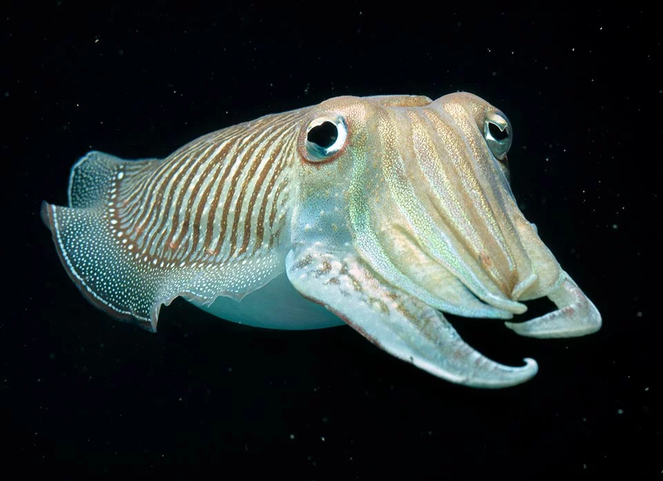
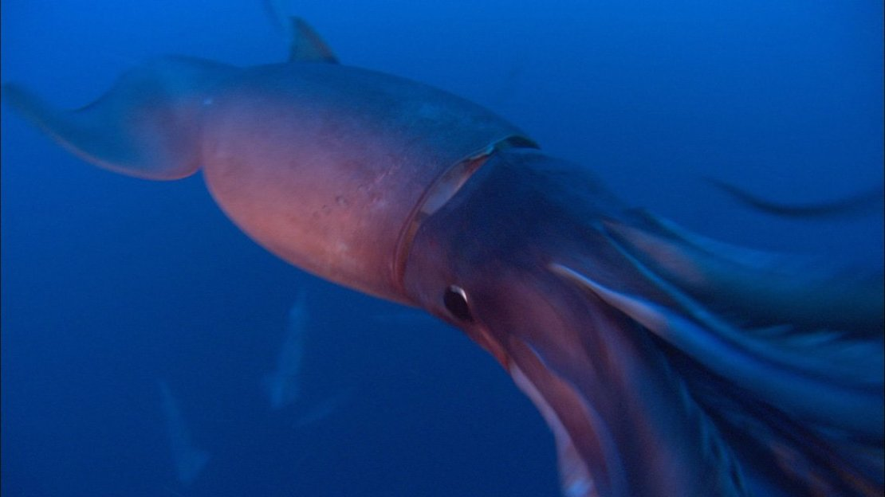

Hlavonožci jsou třída měkkýšů — příbuzní hlemýžďů a mlžů. Jejich předci nosili ulitu jako ochrannou schránku. Před přibližně 500 miliony let začala část z nich ulitu redukovat nebo zcela opouštět. Výměnou získali pohyblivost, rychlost a postupně i složitý nervový systém. Dnes jsou hlavonožci nejinteligentnějšími bezobratlými na Zemi.
Loděnka je jediný žijící hlavonožec s vnější ulitou. Její tělo se za posledních 500 milionů let téměř nezměnilo — je to živá fosilie. Ulita je rozdělena na komůrky, které loděnka naplňuje plynem a reguluje tak vztlak. Žije v hloubkách Indického a Tichého oceánu.
Sépie mají pod kůží zbytky vnitřní ulity — sépiovou kost. Jsou považovány za mistry barvoměny — jejich chromatofory jsou ještě komplexnější než u chobotnic. Dokážou vytvářet pohyblivé vlnové vzory přes celé tělo. Mozek sépie patří k největším v poměru k tělu ze všech bezobratlých.

Krakatice mají deset ramen — osm kratších a dvě dlouhá lovecká chapadla, která vystřelí s překvapivou přesností. Jsou nejrychlejšími hlavonožci a vytvářejí hejna. Největší druh — krakatice obrovská — dorůstá délky přes 13 metrů a je největším bezobratlým živočichem na Zemi.

Všichni hlavonožci mají zobák, sifon pro pohyb proudem vody, vynikající zrak a modrou krev s hemocyaninem. Jejich nervový systém je nejsložitější ze všech bezobratlých. Přesto většina z nich žije jen 1–3 roky — evoluce vsadila na rychlý intenzivní život místo dlouhověkosti.